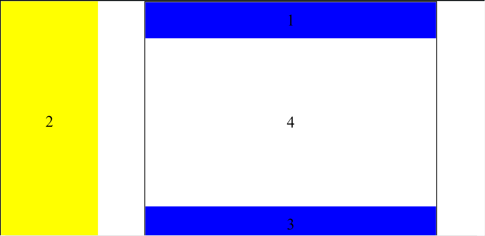

При блоковій верстці істотне значення приділяється універсальному тегу &lt;div&gt;, який виконує безліч функцій. Фактично це основа, на яку «навішуються» стилі. Звісно, це не означає, що застосовується тільки один цей тег, адже потрібно і малюнки вставляти і оформляти текст. Але при верстці за допомогою блоків тег <div> є цеглинкою верстки, її базовим фундаментом.

    Завдяки цьому тегу HTML-код розпадається на ряд чітких наочних блоків, код при цьому виходить більш компактним, ніж при табличній верстці, до того ж пошукові системи його краще індексують.<br>
Макет Гриненко Дениса
<br>
Макет Логвінського Станіслава
<br>
Макет Мельника Максима
<br>
Макет Шарковського Володимира
<br>